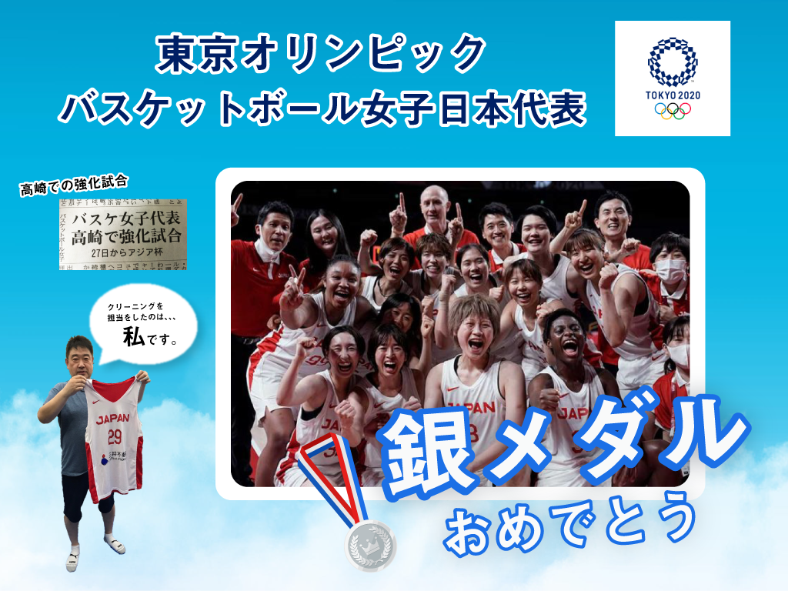

FOR BUSINESS
法人・団体のお客様
作業着・制服、白衣、スポーツユニフォームのクリーニングを承ります。
WORKS
お取り扱いの実績
一般衣類から、企業の制服・作業着、医療施設の患者衣、スポーツチームのユニフォームまで幅広く承っております。
ITEMS
対応品目
作業着・制服
企業の作業着・制服のクリーニングを承ります。
白衣・患者衣
医療施設の白衣・患者衣のクリーニングを承ります。
スポーツユニフォーム・練習着
スポーツチームのユニフォーム・練習着のクリーニングを承ります。
その他の品目
記載のない品目につきましては、お電話にてお問い合わせください。
REASON
選ばれる理由
Reason 01
落ちにくい汚れへの技術
泥・血・皮脂などの落ちにくい汚れも、創業50余年の技術でご相談いただけます。
Reason 02
納期のご相談
数量や時期に応じた納期は、お電話にてご相談ください。
Reason 03
地元密着の小回り
群馬県太田市の店舗として、地域のお客様に寄り添った対応を心がけています。
FOR SPORTS TEAMS
スポーツ団体のお客様

ユニフォーム・練習着のクリーニングを承ります。
プロ野球球団、プロバスケットボールチームのユニフォームをお預かりした実績があり、素材やプリント・マーキングを傷めない洗い方でお手入れします。
遠征・合宿時の短納期対応もご相談ください。日程と数量をお電話でお知らせいただければ、スケジュールを調整いたします。単発のスポット利用も歓迎です。
FLOW
ご利用の流れ
-
ご相談
お電話で品目・数量・時期をお聞かせください。
-
お見積り
内容に応じてお見積りをご案内します。
-
集配・お預かり
お預かりの方法はご相談のうえ決定します。
-
納品
仕上がり品をお届け・お渡しします。
INFORMATION
お取引にあたって
最小ロット、集配範囲、納期、お支払い条件につきましては、お電話にてお問い合わせください。